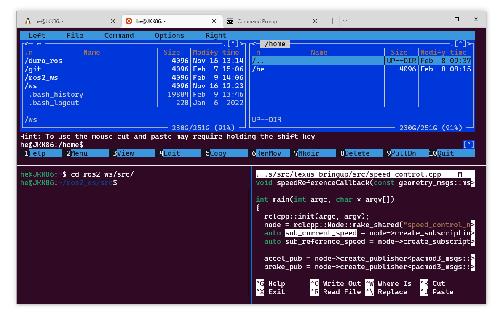

Linux, Git¶
The description contains basic Linux knowledge.

In Linux (in this description, understand Ubuntu, Raspbian), most sessions can or should be executed from the terminal. This tutorial helps to get acquainted with the basics of the Linux terminal.
Danger
It is important that instead of the usual ctrl+v, ctrl+c, here ctrl+shift+v, ctrl+shift+c works. The ctrl+c (interrupt from the keyboard) can be used here to terminate a ROS node (program).
Recommended Terminal Programs¶
Several programs can be chosen to access the text command line. For ROS/ROS2, the following might be the best choices.
Windows Terminal¶
As the name suggests, this solution is relevant on Windows with WSL. The advantage is that we can use multiple Linux distributions in one place, even with the Windows command line. With Ctrl-Shift-P key combinations, then the Split down, Split left commands, we can split the terminal similarly:

The Windows Terminal release page offers a downloadable installer or a portable version in zip format. For portable use, after extraction, an empty .portable file must be placed. This way, we can use it with our usual settings even on a USB pendrive. Such a portable version can be found in the computer labs on the K:\ drive (\\fs-kab.eik.sze.hu\C100\kozos\GKNB_AUTM078_Autonomous_robots_and_vehicles_programming).
Terminator¶
A terminal understood on Linux, but it needs to be installed.
sudo apt update
sudo apt install terminator
Terminator allows you to split the current window with the Ctrl-Shift-O and Ctrl-Shift-E key combinations. Ctrl-Shift-W closes the active window.

VS Code Terminal¶
The integrated terminal of the development environment works on both Windows and Linux.


Important Terminal Commands¶
Previous Commands¶
Up Arrow 🔼orDown Arrow 🔽- Access the most recent commands.Ctrl+Rkey combination allows you to search for previous commands in reverse chronological order.Ctrl+Shift+Rkey combination allows you to search for previous commands in chronological order.
Instead of the usual ctrl+v, ctrl+c, here ctrl+shift+v, ctrl+shift+c works. The ctrl+c can be used to terminate a ROS node (program).

Auto-completion¶
Tabkey can be used to complete the started commands.Tab Tabkey combination will list all possible commands.

Screen Clearing¶
Ctrl+Lkey can be used to clear the previous texts, making the terminal more readable.
Navigating Between Directories¶
cd: enter a specific directory/folder- e.g.,
cd ~/ros2_ws/src,cd ../.. ls: list directories, filesmkdir: create a directorypwd: print working directorycp: copy files (cp /path/to/file /path/to/destination/,cp -r /path/to/directory /path/to/destination/)mv: move (relocate) or rename a file or directory (mv /path/to/file new_file_name,mv /path/to/file /new/path/to/file)rm: delete files (rm /path/to/file,rm -r /path/to/files/and/directories) Therm -rcommand will delete everything at the specified location.rmdir: delete an empty directorychmod: (change mode) used to change the access permissions of files/directories. This can be done using character switches (r, w, etc.) or octally (numbers).- e.g.,
chmod +x my_python_node.py: add execute permission - e.g.,
chmod 777 everything.py: add all permissions
#### chmod
| N | Sum | rwx |
Permission |
|---|---|---|---|
7 |
4(r)+ 2(w) + 1(x) | rwx |
read, write and execute |
6 |
4(r)+ 2(w) | rw- |
read and write |
5 |
4(r)+ 1(x) | r-x |
read and execute |
4 |
4(r) | r-- |
read only |
3 |
2(w)+ 1(x) | -wx |
write and execute |
2 |
2(w) | -w- |
write only |
1 |
1(x) | --x |
execute only |
0 |
0 | --- |
none |
Directories¶
| Location | Explanation |
|---|---|
/ |
The starting point of the directory tree, root |
/boot |
System boot, bootloader |
/bin |
Executable commands, binaries |
/sbin |
Administrator commands, superuser/system bin |
/lib |
Shared system libraries needed for startup, modules, drivers |
/dev |
Devices, such as USB (ttyUSB0) |
/etc |
Configuration files, local startup commands, passwords, network settings, etc. |
/home |
Contains each user's personal directory. For example, if logged in as sanyi, /home/sanyi contains our files. /home/sanyi/Desktop, or simply ~/Desktop, is the content of our desktop. |
/mnt |
Mount point for mounted peripherals, filesystems |
/proc |
Process information |
/root |
The root user's directory |
/tmp |
Temporary files |
/usr |
Universal system resources, applications, system tools |
/var |
Variable data, such as print jobs, emails |
Version Control¶
git clone: clone a git repositorygit config --global user.name "Sanyika": set usernamegit config --global user.email "sanyika@gggmail.com": set emailgit init: initialize a local repositorygit add <file>: add a filegit status: check current statusgit commit -m "My beautiful commit": commit with a messagegit push: push changesgit pull: pull changesgit branch <new_branch_name>: create a new branchgit checkout <branch_name>: switch to a branchgit checkout -- .: Discard all unstaged changes locally. In VS Code, this is similar to the "discard all changes" command. (In newer git versions,git restore .works similarly.)git merge <branch_name>: merge a branch into the current branch
Tip
Most operations can be performed in VS Code without using the terminal. Read more about it here.

Source: link
Text Files¶
wget: download web content from the terminalcat: display the content of a filetouch: create a text file- e.g.,
touch hello.txt echo: print or write to a file (>>operator). If the file does not exist, it creates it (touch).- e.g.,
echo "hello" >> hello.txt - e.g.,
echo "n = 5; print('\n'.join(':D ' * i for i in range(1, n + 1)))" >> hello.py - e.g.,
ros2 topic list >> hello.txt - e.g.,
ros2 topic echo --once /scan >> hello.txt find: search for files, e.g.,find ~/ros2_ws/src/ -name *.txtsearches for alltxtfiles in the~/ros2_ws/srcdirectory.nano: text editor: simple, terminal-basedcode: text editor: GUI, VS Code- e.g.,
code .opens the current folder - e.g.,
code ~/.bashrcopens the~/.bashrcfile for editing colcon: wrapper forcmakeandmakecommands for easier use, more on this later
Installation¶
sudo apt installorsudo apt-get install: install software using the package manager, Advanced Packaging Tool (APT).- e.g.,
sudo apt install tree mc- install tree and mc programs sudo: (Superuser do) Allows executing commands as an administrator or another user.sudo apt update: update package index, recommended before installing (apt install) new software.sudo apt upgrade: upgrade installed packagesapt list: list all installed packages- e.g.,
apt list | grep ros: filter only ROS-related packages
Additional Useful Tools¶
Navigation¶
Ctrl + aorhome: Move to the beginning of the lineCtrl + eorend: Move to the end of the lineCtrl + ◀/Ctrl + ▶: Move to the previous/next word
grep¶
grep: (Global \ Regular Expression \ Print) search within files or command outputs- e.g.,
grep 'ROS' ~/.bashrc: list lines containingROSin thebashrcfile - e.g.,
ros2 topic list | grep pose: list all topics containing the stringpose
ssh¶
ssh: (Secure Shell Protocol) allows remote terminal login to Linux machines- e.g.,
ssh nvidia@192.168.1.5: login to the machine with the specified user and IP address - e.g.,
ssh user01@computer4 -X: login with-Xto use X window, so windows appear on our machine but are hosted on the remote machine - e.g.,
ssh laptop@192.168.0.2 touch hello.txt: create a file on the specified machine, works with other commands as well
Frequently Used Commands¶
psprovides information about running processes, e.g.,ps -A | grep rosorps -eo pid,cmd | grep ros2df -h(disk filesystem, human readable) provides information about the filesystem status
ssh typically requires a password, but if you trust a machine, you can save the private-public key pair to avoid this, for example like this.
rsync Network Copy¶
Copying between networked machines (remote sync), for example, copying from an Nvidia Jetson embedded computer to our own machine's /mnt/c/bag/ folder with a progress bar looks like this:
rsync -avzh --progress /mnt/kozos/measurement_files/lexus-2023-07-18-campus.mcap /mnt/c/temp/
rsync -avzh --progress nvidia@192.168.1.5:/mnt/storage_1tb/2023-07-02/ /mnt/c/bag/2023-07-02/
scp Network Copy¶
Copying between networked machines (an alternative to rsync). Unfortunately, the progress bar does not appear on all systems:
scp /mnt/kozos/measurement_files/lexus3sample02.mcap /mnt/c/temp/
screen¶
Manages virtual terminals, for example:
screen -m -d -S roscore bash -c roscore
screen -m -d -S campfly bash -c 'roslaunch drone_bringup campus_fly.launch'
screen -m -d -S rviz1 bash -c 'rosrun rviz rviz'
- list screen:
screen -ls - restore screen:
screen -r roscore/screen -r campfly/screen -r rviz1 - detach:
Ctrl-a+Ctrl-d - kill:
killall -9 screenandscreen -wipe
mc File Manager¶
GNU Midnight Commander (mc), a file manager inspired by Norton Commander:

nmtui¶
The nmtui (Network Manager Text User Interface) is a terminal-based Wifi / Ethernet / Network configurator.

nano Text Editor¶
Terminal-based text editor. After editing, Ctrl+X to exit, then press Y to save the file.

htop / top¶
htop is an interactive process viewer command (similar to the functionality of the Windows task manager), which displays and monitors running processes on the system. Memory and CPU usage can be read in detail per process, and there is also the possibility to use kill.

~/.bashrc File¶
The bashrc file (the ~ means it is located in the /home/user1/ folder for user user1, and the . means it is a hidden file) is a file that runs every time a terminal is started. So, for example, if we write a command like echo "hello" in it, it will print a hello message every time the terminal starts. It can be edited using nano/VS Code text editors:
nano ~/.bashrc
code ~/.bashrc
export ROS_DOMAIN_ID=4
export ROS_LOCALHOST_ONLY=1
export GAZEBO_MODEL_PATH=$GAZEBO_MODEL_PATH:/opt/ros/humble/share/turtlebot3_gazebo/models
export TURTLEBOT3_MODEL=waffle
source /opt/ros/humble/setup.bash
source ~/ros2_ws/install/setup.bash
bashrc file, there is no need to open a new terminal if we issue the following command:
source ~/.bashrc
ROS1¶
!!! tip This chapter discusses the old ROS 1 environment variables, the new ROS 2 environment variables are covered in the next chapter.
We can print the environment variables using echo or printenv, for example:
echo $ROS_MASTER_URI
printenv ROS_MASTER_URI
http://192.168.1.5:11311
echo $ROS_IP
printenv ROS_IP
192.168.1.10
ROS 2¶
!!! important "ROS 2 Chapter" This is the new chapter containing ROS 2.
We can print the environment variables using echo or printenv, for example:
echo $ROS_DISTRO
printenv ROS_DISTRO
humble
echo $AMENT_PREFIX_PATH
printenv AMENT_PREFIX_PATH
/opt/ros/humble
printenv | grep -i ROS
ROS_VERSION=2
ROS_PYTHON_VERSION=3
ROS_DISTRO=humble
Gazebo and WSL¶
When using the Gazebo simulator and WSL, an issue may occur, which can be fixed by setting a simple environment variable. In the ~/.bashrc file, set the following:
export LIBGL_ALWAYS_SOFTWARE=1 ### GAZEBO IGNITION
After opening a new terminal or running source, the command echo $LIBGL_ALWAYS_SOFTWARE will print 1.
Displaying Branch in Linux Bash¶
*Optional but useful: Find and modify the following part in the ~/.bashrc file.
(Using VS Code, the command is: code ~/.bashrc)
if [ "$color_prompt" = yes ]; then
PS1='${debian_chroot:+($debian_chroot)}\[\033[01;32m\]\u@\h\[\033[00m\]:\[\033[01;34m\]\w\[\033[00m\]\$ '
else
PS1='${debian_chroot:+($debian_chroot)}\u@\h:\w\$ '
fi
unset color_prompt force_color_prompt
Once found, replace it with the following:
parse_git_branch() {
git branch 2> /dev/null | sed -e '/^[^*]/d' -e 's/* \(.*\)/(\1)/'
}
if [ "$color_prompt" = yes ]; then
PS1='${debian_chroot:+($debian_chroot)}\[\033[01;32m\]\u@\h\[\033[00m\]:\[\033[01;34m\]\w\[\033[01;31m\]$(parse_git_branch)\[\033[00m\]\n\$ '
else
PS1='${debian_chroot:+($debian_chroot)}\u@\h:\w$(parse_git_branch)\\n$ '
fi
parse_git_branch() {
git branch 2> /dev/null | sed -e '/^[^*]/d' -e 's/* \(.*\)/(\1)/'
}
if [ "$color_prompt" = yes ]; then
PS1='${debian_chroot:+($debian_chroot)}\[\033[01;32m\]\u@\h\[\033[00m\]:\[\033[01;34m\]\w\[\033[01;31m\]$(parse_git_branch)\[\033[00m\]\$ '
else
PS1='${debian_chroot:+($debian_chroot)}\u@\h:\w$(parse_git_branch)\$ '
fi
Save, then after source ~/.bashrc, or opening a new terminal, a bash similar to the following will greet us in a directory containing a git repository:

Source:
Ubuntu magyar dokumentációs projekt CC by-sa 2.5, Óbuda University CC BY-NC-SA 4.0